ケース１ 理央ちゃん
実際の運動機能訓練の結果を報告するわけですが、専門用語が登場します。一部を「☆」で簡単に説明いたします。
☆ ツイスター：靴などを履いた足先があまりにも内側に入ったり、外側に出てしまうときに、それを矯正するために使うゴム状もしくは鋼鉄製のコイル状の装具。
|
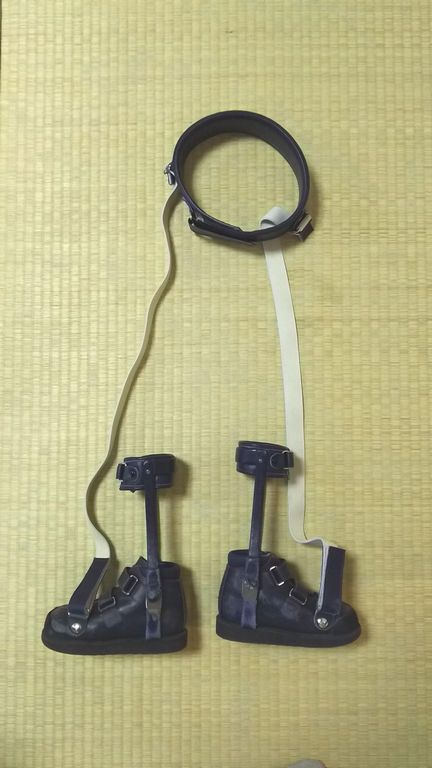
|
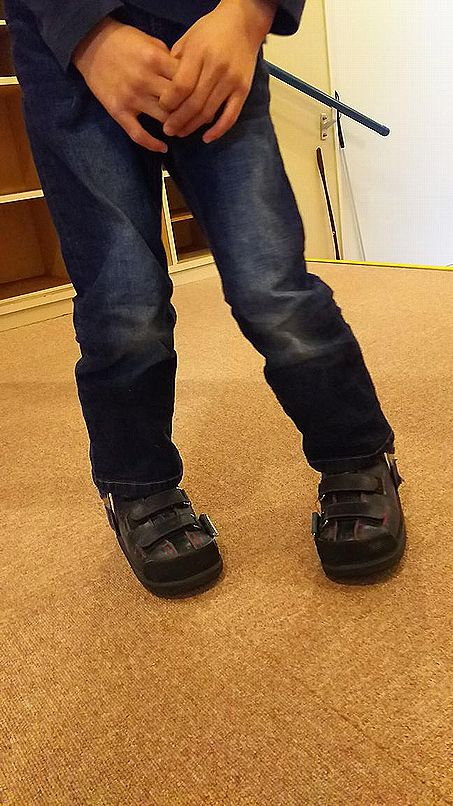
|
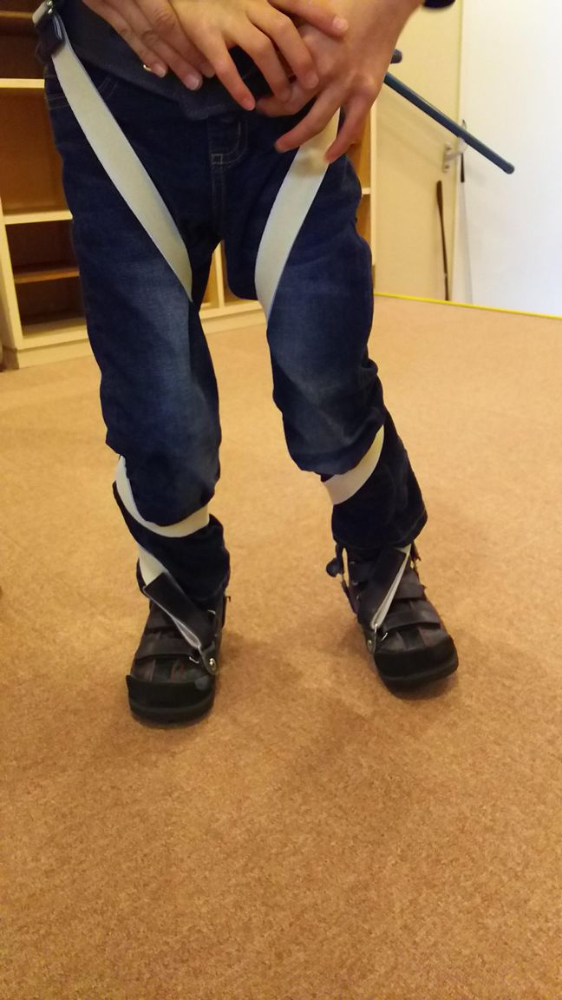
|
☆ SLB （ Short Leg Brace ）：足関節と足部に変形や何らかの課題があるときなどに使用する短下肢装具。
|
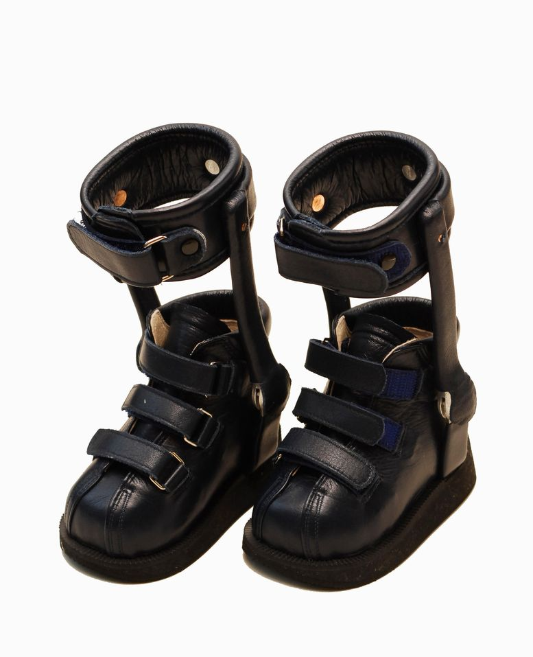
|
☆ LS（スタビライザ：Long Leg Standing Stabilizer ）：足の太股までを道具によって支えることによって、立位姿勢を容易に可能とさせる立位補助装具。
|
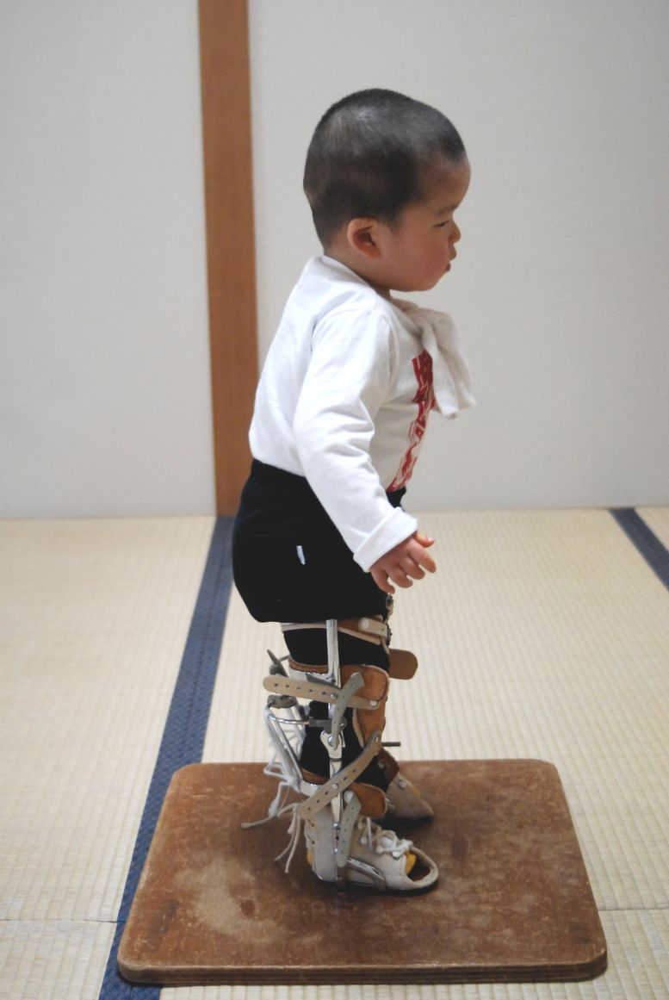
|
☆ 進度１：松葉杖を使用しても一人で立っていることができない状態。
進度２：松葉杖を使用すると一人で立っていられるが、杖も足も動かせない状態。
進度３：松葉杖を使用すると杖も足も動くが、立位や歩行バランスに関係なく杖や足を動かしてしまう状態。介助していないととても立っていられない。
進度４：松葉杖を使用すると杖と足をうまく運ぶようになり、身体の一部や転倒予防の紐などを持っていてあげれば、一人で杖歩行が可能の状態。
進度５：松葉杖を使用して杖と足をうまく運ぶことができ、近くで見守れば一人で杖歩行ができる状態。
☆ ボトックス注射治療：筋を弛緩させる治療の一種で、緩めたい筋に薬液を注入する。
☆ PCW （ posture control walker ）：ハビリテーション用具の歩行器の一種で、前方にしか動かないように工夫された歩行器。
|
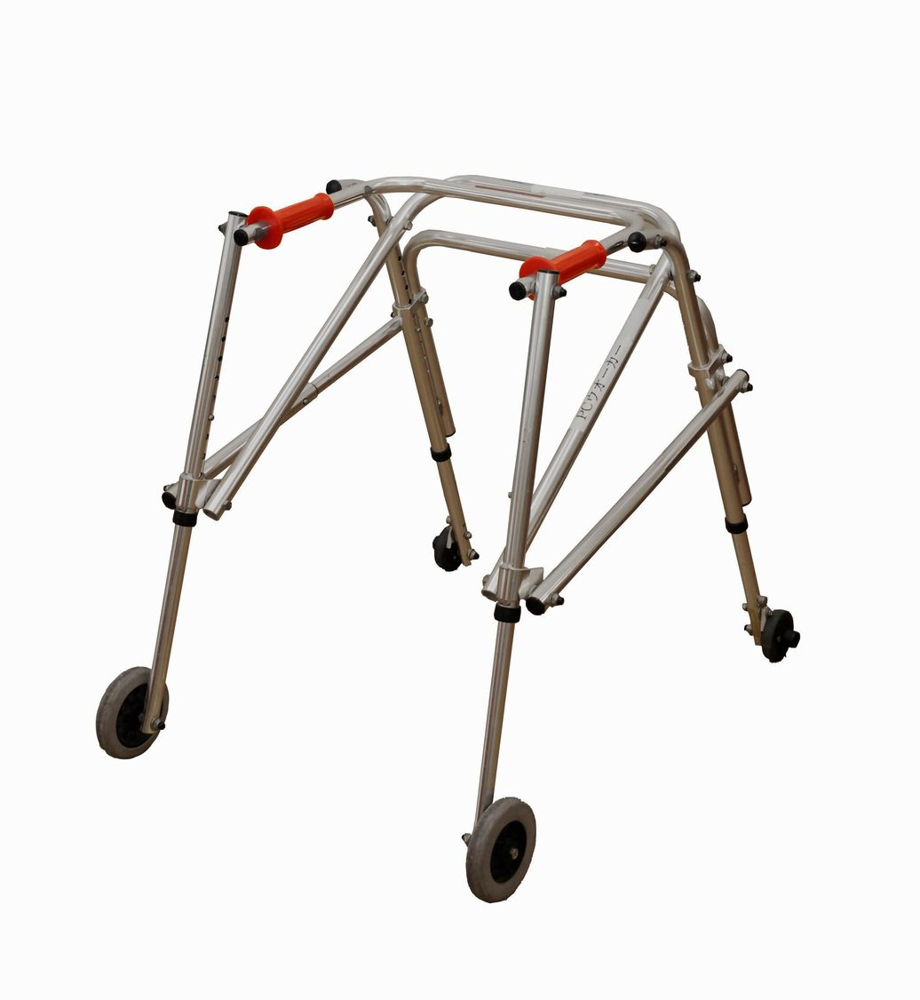
|
☆ 歩行器：自転車のようなハンドルを持ち、前に押すことによって動き、歩行器そのものの動きは前後左右に自由に動く使用に不安定な歩行器。
俗称：てけてけくん
|
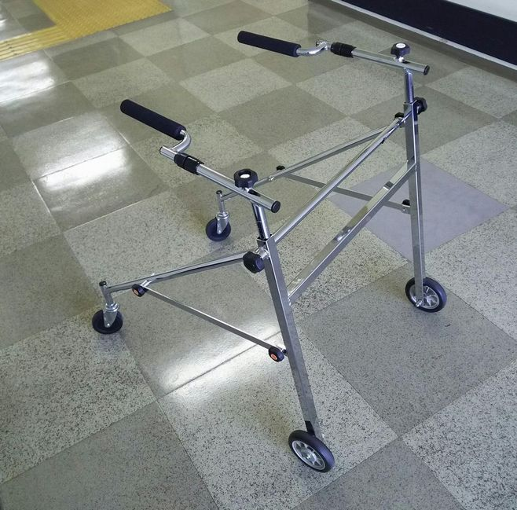
|
☆ ロフストランドクラッチ：前腕杖とも呼ばれ、歩行補助具の杖の一種。
|
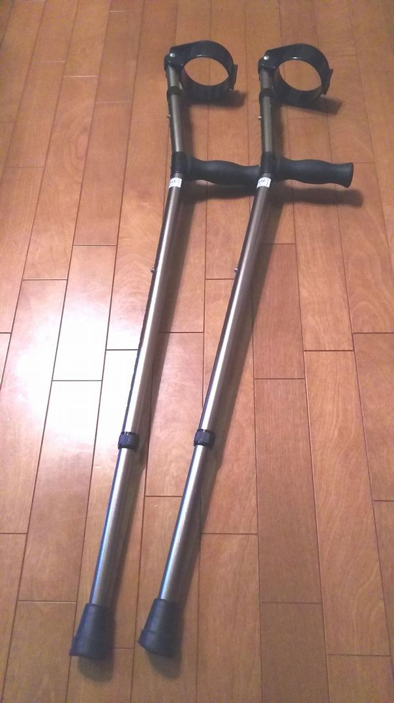
|
◎ 我が子の発達経過
共稼ぎのためなのか私たち夫婦には、なかなか子どもが恵まれませんでした。それが嬉しいことに妊娠したのです。それも双生児とわかり、夫婦して喜んでいました。
約８ヶ月で、一卵性双生児のため管理入院となり、入院２週間後頃から、お腹の張りが強くなり、24時間点滴が出産まで続きました。
出産前日少しお腹の痛みがあり、私のお腹が限界で、「３２周６日までいれば外に出しても大丈夫だろう、保育器で育てた方が大きく育つだろう」とのことで、帝王切開となりました。
2007年03月に、産まれた理央の出生体重は2071gで、相方の体重は1617gでした。
予定日より１ヶ月半早く生まれてきたので、二人してNICUに47日間入りました。NICU退院時に、脳質周囲白質軟化症と伝えられました。
訓練は、NICUに入っている１ヶ月の時から受けていました。首がすわったのは４ヶ月で、寝返りを始めたのは１歳でした。
１歳１ヶ月より市立小児せんたーで訓練を始めて、自分でお座りを始めたのは１歳６ヶ月ころで、四つ這いを始めたのは１歳10ヶ月でした。
１歳10ヶ月より県リハビリテーションセンターでも訓練が始まり、つかまり立ちを始めたのは２歳６ヶ月、歩行練習に入ったのは２歳10ヶ月で、PCWを使っていました。
３歳８ヶ月の時には、PCWに自分でつかまって立ち上がり、前に進むことができるようになっていました。方向転換は、練習中でした。
∞ 訓練指導に当たる者から見た理央ちゃんの変化
３歳11ヶ月で訓練会に来られたが、ボトックス注射治療を受けて２ヶ月ほどとのことで、実際の関節可動域の状態を診ることができないと判断し、２ヶ月後に再来してもらうこととしました。
４歳１ヶ月、ボトックスの効果が減少していると思えるのに、２ヶ月以前とあまり関節可動域に変化がない。痙直型と思えるが、クローヌスの深部腱反射が診られない。
臥位から座位まで問題なし。四つ這いを行い、交互性有り問題なし。立位、歩行不能。
訓練内容として、全身のストレッチ、床からの立ち上がり、松葉杖歩行とした。
松葉杖歩行訓練にはいる。進度１。尻を後方に引き、立つという感じよりも松葉杖に寄りかかろうとしている。
松葉杖とSLBを貸し出す。
・ 訓練を開始して４週間後：松葉杖歩行練習の方法をお母さんに指導する。家庭でも松葉杖歩行訓練をするように指示した。
・ 訓練を開始して５週間後：松葉杖の使い方がうまくなり、尻が後ろに引かれることが少なくなっている。松葉進度２となる。
・ 訓練を開始して８週間後：床からの立ち上がりがうまくなっている。立った時に、股関節と膝関節が伸びるようになっている。
松葉杖歩行練習で、尻が後方に引かれないようになっている。
・ 訓練を開始して２ヶ月後：松葉進度３となる。
・ 訓練を開始して３ヶ月後：松葉進度４となる。
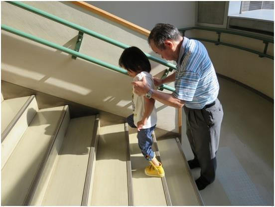
|
・ 訓練を開始して４ヶ月後：訓練内容に、階段昇降を加える。
|
・ 訓練を開始して７ヶ月後：松葉杖歩行での歩行スピードが上がっている。
・ 訓練を開始して11ヶ月後：股、膝関節の関節可動域が狭いために、歩行能力が上がらないと考えられる。整形外科での手術を考えてもらう。整形外科受診を勧める。
・ 訓練を開始して１年２ヶ月後：股、膝関節周辺筋の筋解離術を受ける。
・ 手術を受けて２週間後：術後の訓練を以前と同様に開始。LSを貸し出す。
・ 訓練を開始して１年４ヶ月後：術後で足が出やすくなったが、両足共に下腿部が内旋するので、ツイスターでの矯正を試みる。
・ 訓練を開始して１年９ヶ月後：独歩の訓練に入る。
|
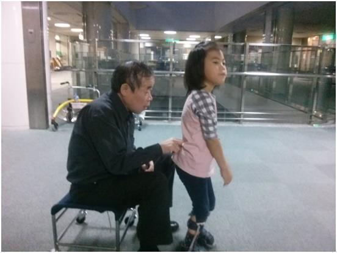
|
・ 訓練を開始して２年後：地元の支援学級に入学。
・ 訓練を開始して２年１ヶ月後：独歩訓練をしていて、手放しでの立位の怖さが取れない。PCWでの立位や歩行の経験が、立位や歩行での姿勢とバランスを誤学習させたと考えられる。
階段昇降で、昇りが交互にできるようになる。
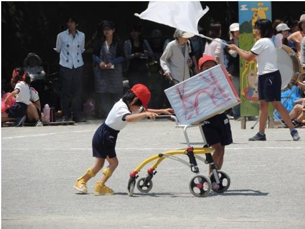
|
・ 訓練を開始して２年４ヶ月後：松葉杖歩行で、歩幅が小さくスピードが出てこないので、歩行器歩行を併用して行うこととする。
歩行器で運動会参加。
|
・ 訓練を開始して２年10ヶ月後：立位にさせてあげると、数歩の独歩を行う。
・ 訓練を開始して３年11ヶ月後：松葉杖歩行から独歩を目指していたが、独歩に至る様子が見えないので、ロクストランドクラッチでの歩行と階段昇降訓練に入る。
・ 訓練を開始して４年２ヶ月後：床から一人で立ち上がり、４m程独歩を行う。
・ 訓練を開始して４年３ヶ月後：床から一人で立ち上がり、10m程独歩を行う。
・ 訓練を開始して４年６ヶ月後：床から一人で立ち上がり、30m程独歩を行い倒れ、再び立ち上がって30m程歩き倒れ、これを繰り返している。
・ 訓練を開始して５年５ヶ月後：床から立ち上がり、50m程独歩を行う。
・ 訓練を開始して５年８ヶ月後：200m程離れたコンビニに、ロクストランドクラッチ歩行で姉妹で買い物に行けるようになる。
◎ 理央ちゃんの今後の期待
♪ 保護者の感想
独歩で歩くことを目標にしてきた娘は、訓練で自信をつけ、さらに次の目標を見つけています。それは、近所のコンビニまで歩いて買い物に行くことです。
「アイスを買おうかなぁ？」、「でも、とけちゃうかなぁ？」、「ママにも何か買ってきてあげようかぁ？」、娘とこんな会話ができるなんて、松葉杖訓練を始めた当初は考えられませんでした。
立つこともできなかった娘が、自分の足でしっかりと立ち、歩き出すことができるなんて、本当に夢のようでした。
保育園卒園式。
|
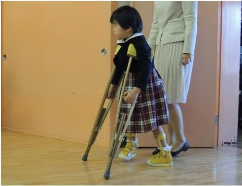
|
松葉杖訓練は、私たち保護者も訓練の方法を教えていただき、家庭でも取り組める訓練です。まだまだ不安定な歩行ですが、一人で歩きたいという娘の夢を叶えるために、必死に家族で取り組んできました。時には一緒に涙したり、時には心を鬼にして娘を突き放したり、娘の小さな運動機能の向上に一喜一憂してきた６年間でした。
小学校に入学してからは、校内は歩行器移動、２年生の後半からは、松葉杖からロクストランドクラッチで移動をするようになりました。
友達と同じ速さでの移動は難しいのですが、毎日階段を昇り降りし、杖で歩いています。歩くことが当然の環境の中で、自分も歩くんだという気持ちを高めていったように感じます。
身体が弱く２週間に１回は熱を出し保育園や学校を休んでいた娘が、３年生になって初めて皆勤賞をもらってきました。身体を動かすことも大好きになり、休み時間には、校庭に飛び出し遊びまわっています。３年生の運動会では、最後の５mを独歩し、みなさんに暖かい拍手をいただきました。
一歩一歩、少しずつではありますが、娘の夢に近づいてきています。
娘の目標は、訓練で歩くことではなく、日常生活の中で歩くことです。買い物に行きたい、ランドセルを背負って歩きたいなど、夢は膨らむばかりです。どこまでこの夢を叶えてあげられるのか、ゴールはまだまだ先ですが、一筋の光が松葉杖訓練に出会ったことにより見えてきたように思います。
幼かったある日、散歩道で妹に発した娘のひと言「いいな～ 歩けて！」という言葉が、今でも忘れられません。
私たち親がしてあげられることは、娘の可能性を信じて、共に前へ進むことです。そして適切な訓練を受けさせてあげることだと思います。ここまでの運動機能だと限界を決められたり、あきらめたりする必要はないことを、同じ障害もつ家族に伝えたいです。
♪ 指導者からの感想
独歩が実用になるのか？ ロクストランドクラッチでの歩行で留まってしまうのか？ 期待する者には大きな格差であり、本人の将来にも大きく影響することですが…。
訓練を指導してきた者から見れば、松葉杖歩行が練習開始から６ヶ月ほどの間に可能となれば、松葉杖歩行を３年ほど継続することによって、独歩に至るのが普通であるのに、理央ちゃんはその例とは異なっているようです。その大きな理由が、PCWでの歩行練習に有ったと考えられるのです。PCWを使ってのマイナス面は、立つとは、足で体重を支えて二足で身体を支持することを指すのに反して、上肢の力で身体を支えて足に負荷をあまりかけない点が特にマイナスと考えます。
PCWでの歩行練習の全てが、悪いわけではありません。短期で杖歩行や独歩に至るケースもあるわけですが、長くとも１年で、杖歩行や独歩に至らない時には、止めて他の方法を考えるのが良いと思われます。誤学習に進む可能性が高いからです。
立つことが苦手やできない子どもに、スタビライザを用いることによって立位感覚とそれに必要なバランスと筋力を得ることが可能となったのです。
立てば伝い歩きを始めるわけですが、手足が不自由のために伝い歩きができない、立つことや伝い歩きを行わない子どもに対して、松葉杖を使用することによって容易に伝い歩きの替わりとなる松葉杖歩行の練習ができたのです。その結果理央ちゃんのように、四つ這い可能な麻痺児が杖歩行や独歩を獲得したのです。
製作 LS-CC松葉杖訓練法 湯澤廣美